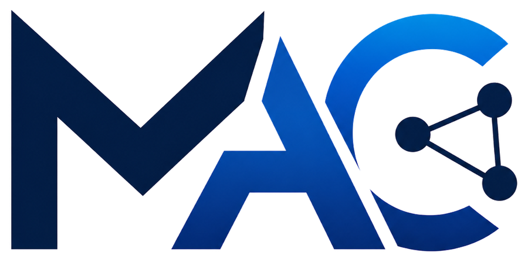

MAIWAND ALAMZOII help AgriTech companies, water authorities and municipalities automate satellite data workflows — reducing manual analysis time from weeks to minutes and building production-ready AI tools.
I build the full pipeline — from raw satellite and sensor data to the model, the API and the live product a client's team actually uses — as an independent consultancy, not a single-hat freelancer.
AI, data science and geospatial consultant with 7+ years building and deploying satellite-data, machine-learning and software systems for real production use. Founder of a KVK-registered technical consultancy (SBI 71120 & 62200) delivering applied AI and data solutions to Dutch SMEs and international clients. Built and deployed two production platforms solo.
Unusual engineering depth: an M.Tech from IIT Kharagpur (machine design, CAD, control & instrumentation — Nuffic-evaluated as equivalent to a Dutch wo master's) combined with international programme and policy experience as a former FAO (UN) national consultant, now on the FAO UN Expert Roster. Comfortable owning the whole pipeline and communicating clearly to non-technical stakeholders.
Based in Leuth (Gelderland, Arnhem-Nijmegen region) and available hybrid or on-location anywhere in the Netherlands for site visits, workshops and embedded project work. Particular focus on themes with active Dutch and EU funding and policy attention: nitrogen and drought monitoring, precision agriculture (Wageningen ecosystem), ESG & CSRD reporting, and climate adaptation. Also available fully remote for EU and international engagements.
Satellite crop monitoring, stress/yield prediction, and precision-farming data pipelines.
Flood, drought, heat and subsidence risk data; CSRD-ready climate reporting.
Geospatial analytics for land use, mobility and climate-adaptive planning.
Location-based risk scoring built on real government climate and hazard data.
Python (Pandas, NumPy, scikit-learn), Random Forest, XGBoost, time series (ARIMA, Prophet), PyTorch foundations, LLM integration (Claude / Gemini APIs), prompt engineering.
SQL, PostgreSQL, Power BI, Streamlit, Plotly, Google Earth Engine, QGIS, GeoPandas, Sentinel-2, NDVI/EVI analysis.
Flask, REST APIs, Git/GitHub, Docker, Microsoft Azure, Render, IoT & sensor pipelines, CAD (SolidWorks, PRO/E).
Project Cycle Management, monitoring & evaluation, policy analysis & formulation, multi-stakeholder coordination, technical training.
Registered independent consultancy delivering applied AI, machine-learning and data solutions to Dutch SMEs and development-sector clients.
Full-stack AI platform processing live satellite data into field-level analytics, with a multilingual advisory layer.
ML models for crop stress/disease detection (~87% accuracy); deployed monitoring app across commercial sites.
IoT-based monitoring and real-time data workflows for controlled-environment systems.
Python data-analysis pipelines and visualisations; trained 40+ professionals; contributed to EU project proposals.
Processed and analysed large datasets to derive performance indicators.
Policy analysis, food-security assessments, national policy database; selected onto FAO UN Expert Roster.
Led national mechanization services (team of 15+) across all 34 provinces — field-tested machinery under real operating conditions and trained farm managers on machinery and technology.
Available for freelance and consultancy projects in AI, data science, machine learning and geospatial analytics.
Book a Free 30-Minute Geospatial & Data Audit maiwand@alamzoiconsultancy.com GitHub